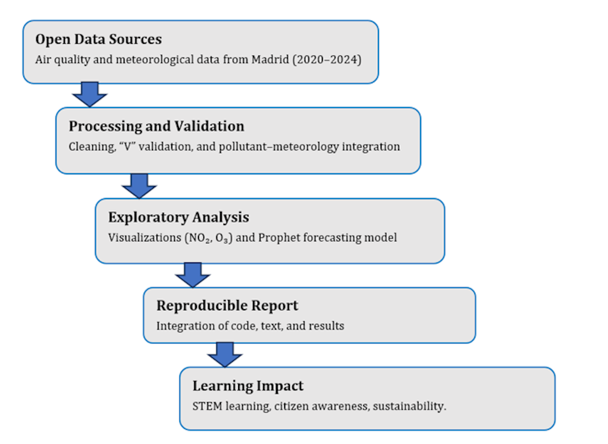
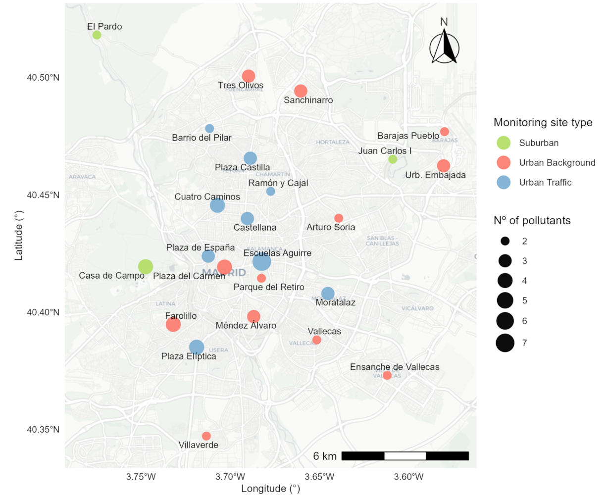
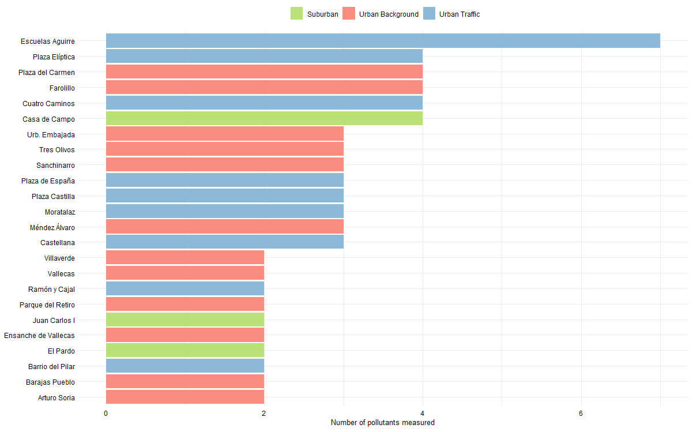
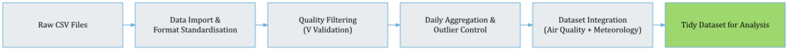
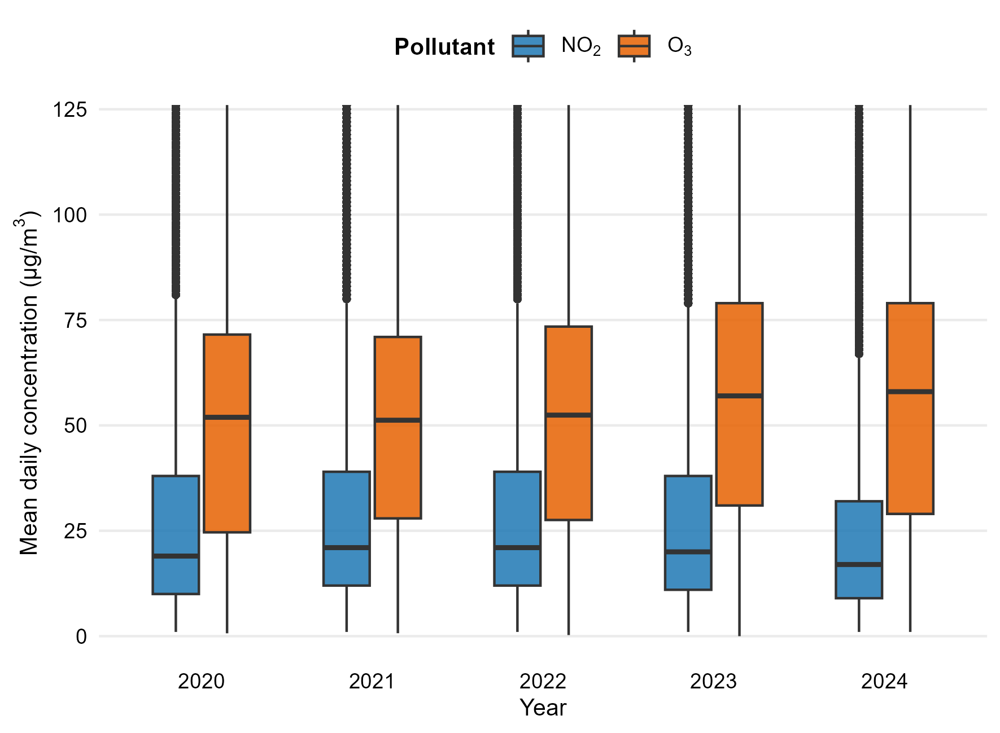
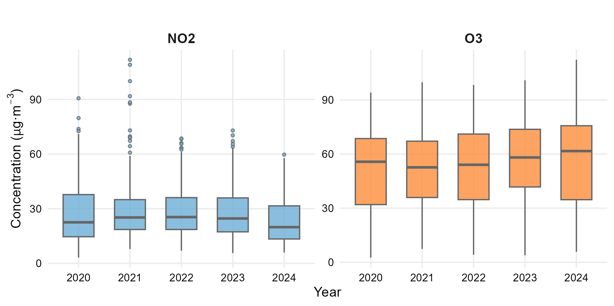
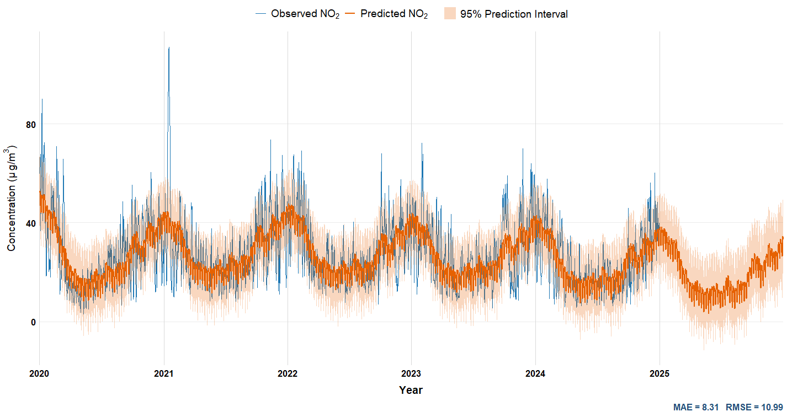
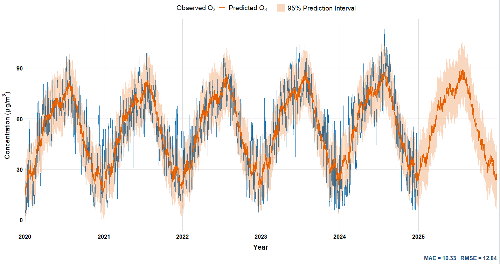
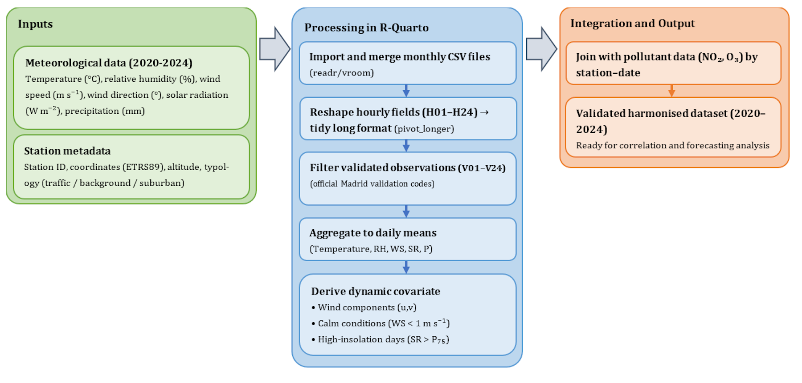
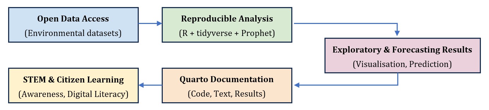

Educational Notebook
Citizen Science and STEM Education with R: Forecasting and Reproducible Learning from Open Urban Air Quality Data
1 🌍 Introduction
This notebook complements the article Citizen Science and STEM Education with R: AI–IoT Forecasting and Reproducible Learning from Open Urban Air Quality Data
(Applied Sciences, 2025) and includes reproducible code examples, data harmonisation workflows, and visualisations.
It reproduces the main analytical workflow implemented in the study and illustrates how R and Quarto can be integrated into STEM education to foster data literacy, environmental awareness, and methodological transparency.
2 🔁 Reproducible Data Workflow
The complete workflow integrates open data, computational reproducibility, and STEM learning.
It can be applied to other urban contexts or courses focusing on environmental informatics, statistical modelling, or sustainability transitions.
3 🗂️️ Data Sources and Structure
3.1 Air Quality Data
Air quality datasets were retrieved from the Madrid Open Data Portal (Portal de Datos Abiertos del Ayuntamiento de Madrid).
Measurements include nitrogen dioxide (NO₂), ozone (O₃), particulate matter (PM₁₀, PM₂.₅), sulphur dioxide (SO₂), and carbon monoxide (CO) recorded hourly across 24 urban stations (2020–2024).

3.2 Pollutant Coverage
Each station has different pollutant coverage and measurement frequency, which provides an excellent example for students to explore data completeness and measurement uncertainty in open environmental datasets.

3.3 Data Processing Workflow
Data from both sources were processed in R through three main stages:
- Reading and cleaning monthly CSVs (removing redundant columns and correcting data types).
- Validating records with confirmed measurements (
VALflag).
- Pivoting and compressing results into
parquetformat for efficiency and consistency.

4 📊 Exploratory Analysis
This section presents an exploratory analysis of key urban air pollutants using open environmental data. The aim is to characterise the temporal variability and distributional properties of NO₂ and O₃ as a basis for subsequent modelling and correlation analyses. Exploratory statistics are used to identify long-term trends, seasonal patterns, and interannual variability relevant for urban air quality dynamics.
4.1 Annual and Seasonal Variability
Figure 4 shows the annual variability of daily mean NO₂ and O₃ concentrations over the 2020–2024 period. NO₂ concentrations display relatively stable distributions with a slight reduction in median values in the most recent years. In contrast, O₃ exhibits higher dispersion and a progressive increase in median and upper-range concentrations, reflecting its pronounced seasonal behaviour.
Overall, the boxplots highlight distinct distributional patterns between the primary pollutant (NO₂) and the secondary pollutant (O₃), providing a descriptive baseline for the subsequent correlation and modelling analyses.

4.2 Distribution Analysis
Boxplots provide a powerful visual tool to discuss dispersion, central tendency, and outliers across pollutants.
In this context, students learn how descriptive statistics translate into environmental interpretation, reinforcing quantitative reasoning with real data.

5 🔮 Forecasting with Prophet
Time-series forecasting introduces students to predictive modelling using open environmental data.
The Prophet model (Taylor & Letham, 2018) was selected for its interpretability, decomposition structure, and robustness to missing values — key features for teaching reproducible forecasting in R.
5.1 Model for NO₂
Students can visualise how additive components — trend, seasonality, and residuals — reveal the influence of human activity and meteorological cycles on pollutant evolution. This exercise supports reproducible experimentation with forecasting horizons, cross-validation, and performance metrics such as RMSE or MAE.


6 🌦 Meteorological Integration
Meteorological factors shape pollutant behaviour and are fundamental in understanding atmospheric processes.
By integrating temperature, solar radiation, and wind speed data from AEMET, learners can explore multivariate relationships within an urban ecosystem.
6.1 Integration Workflow

6.2 Correlation Analysis between Pollutants and Meteorological Variables
To complement the integration workflow, this section computes the Spearman correlations between daily concentrations of NO₂ and O₃ and six meteorological parameters (temperature, relative humidity, wind speed, solar radiation, atmospheric pressure, and precipitation) using the validated datasets (2020–2024).
Code
library(arrow)
library(dplyr)
library(tidyr)
library(corrr)
library(knitr)
library(purrr)
library(lubridate)
# --- 1. Cargar y combinar archivos anuales ---
air_files <- list.files(
"data/Calidad del Aire_Parquet",
pattern = "aire_validados_.*\\.parquet$",
full.names = TRUE
)
met_files <- list.files(
"data/Meteorologia_Parquet",
pattern = "meteo_validados_.*\\.parquet$",
full.names = TRUE
)
air <- map_dfr(air_files, read_parquet)
met <- map_dfr(met_files, read_parquet)
# --- 2. Crear variable diaria ---
air <- air %>%
mutate(date = as.Date(FECHA_HORA))
met <- met %>%
mutate(date = as.Date(FECHA_HORA))
# --- 3. Agregar diariamente y pivotar a formato ancho ---
air_wide <- air %>%
mutate(MAGNITUD = as.character(MAGNITUD)) %>%
group_by(date, MAGNITUD) %>%
summarise(valor = mean(VALOR, na.rm = TRUE), .groups = "drop") %>%
pivot_wider(names_from = MAGNITUD, values_from = valor)
met_wide <- met %>%
mutate(MAGNITUD = as.character(MAGNITUD)) %>%
group_by(date, MAGNITUD) %>%
summarise(valor = mean(VALOR, na.rm = TRUE), .groups = "drop") %>%
pivot_wider(names_from = MAGNITUD, values_from = valor)
# --- 4. Unir por fecha ---
data_joined <- inner_join(air_wide, met_wide, by = "date")
# --- 5. Renombrar magnitudes (solo las que existen) ---
data_joined <- data_joined %>%
rename_with(
~ recode(
.x,
`8` = "NO2",
`14` = "O3",
`81` = "WS",
`83` = "T",
`85` = "PRES",
`86` = "RH",
`87` = "SR",
`89` = "PREC"
),
.cols = intersect(
names(data_joined),
c("8", "14", "81", "83", "85", "86", "87", "89")
)
)
# --- 6. Calcular correlaciones de Spearman (robusto) ---
vars <- c("NO2", "O3", "T", "RH", "WS", "SR", "PRES", "PREC")
cor_matrix <- data_joined %>%
select(any_of(vars)) %>%
correlate(method = "spearman") %>%
focus(any_of(c("NO2", "O3"))) %>%
arrange(term)
# --- 7. Mostrar tabla formateada ---
kable(
cor_matrix %>%
mutate(across(where(is.numeric), ~ round(.x, 2))),
caption = "Table 4. Spearman correlation coefficients (ρ) between daily pollutant concentrations and meteorological variables (2020–2024).",
col.names = c("Variable", "NO₂", "O₃")
)| Variable | NO₂ | O₃ |
|---|---|---|
| PREC | -0.18 | -0.11 |
| RH | 0.24 | -0.70 |
| SR | 0.55 | -0.46 |
| T | -0.35 | 0.68 |
| WS | -0.75 | 0.57 |
7 🎓 Learning and Reproducibility Framework
Reproducibility is both a scientific and pedagogical value.
This framework unifies open data, transparent computation, and educational innovation, reinforcing the culture of open science.

8 🧑🏫 Educational Applications
This Notebook can be directly incorporated into undergraduate or postgraduate STEM courses focused on data analysis, environmental informatics, or sustainability.
Suggested learning activities: 1. Reproduce pollutant forecasts with modified training periods.
2. Explore correlations between additional meteorological variables.
3. Design inquiry-based projects connecting data to local environmental policies.
4. Document and publish reproducible reports using Quarto and GitHub.
Through these exercises, students not only practise coding but also embrace scientific integrity and civic engagement through data.
9 🌐 Repository and Citation
All code, figures, and harmonised datasets are openly available at:
https://github.com/jcaceres-academic/OpenUrbanAirandMeteorological
When citing this educational resource, please use:
Cáceres-Tello, J., Galán-Hernández, J. J., Morales Cevallo, M. B., & López-Meneses, E. (2025). Citizen Science and STEM Education with R: AI–IoT Forecasting and Reproducible Learning from Open Urban Air Quality >Data. Applied Sciences, 15(22), 12183. https://doi.org/10.3390/app152212183
This ensures traceability and recognition for open-source academic contributions.
10 📚 References
All cited works are managed through the shared bibliographic file applsci-3979500.bib, which includes all references used in the manuscript and notebook.
A public mirror of this bibliography is archived in the author’s Zotero collection:
➡️ https://www.zotero.org/jcaceres_academic/collections/X6RW9UGU